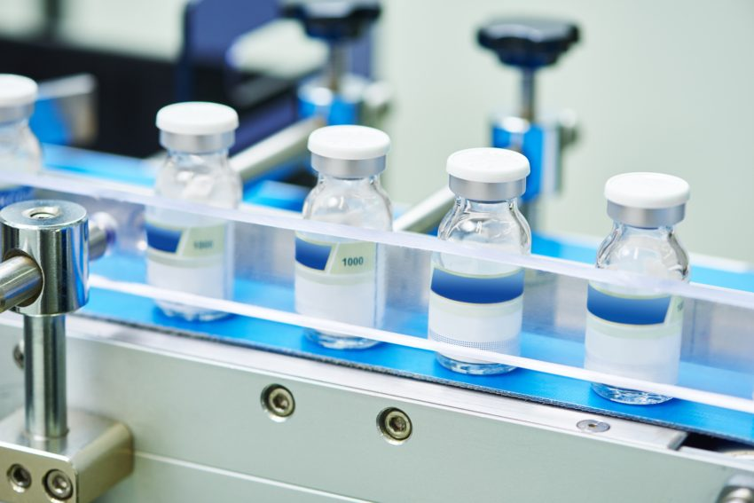
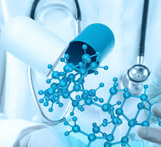
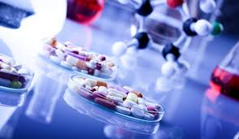

Quality Control
The term quality control refers to the sum of all procedures undertaken to ensure the identity and purity of a particular pharmaceutical.

Research and Development
The research and development (R&D) process is a critical stage in drug development in the pharmaceutical (Pharma) industry. The process starts after an initial candidate drug is identified and encompasses the rigorous research tests that determine its therapeutic suitability.

Pharmaceutical Technology
Pharmaceutical scientists typically focus on a specific phase of the drug-development cycle — research, testing, or manufacturing.